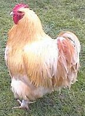

Abon d'gens s'dèstouônites a r'gardé quand j'entrîmes au Show d'Volâlle, Lonôre et mé, la s'maine passée; et y'en eut qui s'quârites pour nos laissi monté sus la Strade - y pensaient que ch'tait mé qu'allais d'livré les prix. A vrai dithe, j'pathaisaîmes pon tant piéthe, ma fille et mé! Lonôre sustout! ov san chapé a rouoges plieummes, les pus hautes que j'pûmes trouvé en ville - san neu fro d'verte souée ove quatr' rangies d'jodrins a l'entou, et la chaine de montre a Piteur pour faithe un brac'let. J'n'eûmes pon l'temps d'faithe pus d'un d'mié tou du Marchi qu'y'avait déja chinq ou six jeunes messieux a nos siethe en se d'mandant que ch'tait qu'ches dames la.
"Ch'est des Dgernesiaises," disait y'un. "Nouffet! s'fit un autre; ch'est la fille du manadjeur d'la Dairy." "Tchi niollin! s'fit yun qu'avait eunne rosette a sa boutounniethe, j'sis seux d'avé veu chutte d'mouèzelle la a Pliamus; ch'est la fille d'un offici d'navithe-de-dgèrre." tandi que l'preumi qu'avait pâslé dit qui s'n'allait d'mandé au President d'la Société si j'taîmes pon d'la djingue du Gouverneux. "Craule un mio tan fro par driethe" que j'dis a Lonore, nou nos r'merqué, et j'continuimes a nos proumné up-an-down.
Bétot, ne v'la Moussieu Labey qui s'en vint a not' rencontre ov san chapé a sa main. "Bonjous, Madame Pain: Bonjour Miss Pain; qui dit en offrant l'bras a Lonore. Souhait-ous que j'vos poumenne au-touore du show?" J'clyinti a Lonore d'avé a prendre san bras; et nos v'la, touôs les très, a examiné pigeons, poules, et canariens - les jeunes messieux (y'en avait bi huit ou djix achteu) nos siŷzaient par driéthe.

"Estes-ous pour la volalle? Madame Pain; me d'mandi Moussieu Labey, et Miss Pain èseve t'alle des canariens? Car y'a du chouèx ichin; et j'peux vos montré des poules de toute preumié qualité." N'en v'chin yeunne (ou nos vint de Gernezi, et san propriétaithe en r'fuse tchinze louis) par exemplye, qu'est r'noumée pour ses gros oeus: quand ou s'y met pour de bon, ou pond très jours de siette; ses très oeus pessent jommais mains d'eunne livre, et ou s'r'pose l'restant d'la s'maine pour r'quémanchi l'Dînmanche."
"Aimous les poules pîlées? N'en v'chin des Houdans qu'ont un tun sus la tête: ch'est la miyeuthe a manji au fou ov tout pien d'gréevé. Ches grosses jaunes là, ch'est des orpingtons. Y fûtes inventées par un Moussieu Buff qui mint d'soeux d'rèté a coué souos eunne pie; il en sorti un ouézè qui fut accouplié ov un vert pérrot: l's'oeux futes mins a coué souos eunne cauque-suothie - et il en sorti des poules coumme ou viyis là, ma chiethe Madame Pain!"
"Chès gros pigeons ichin, nou l's'appele des 'tembleurs' pasqu' quand nou les met a tchuithe, y faut les stoffé ov pien un teumbleur de cliou d'girouffe: tandi qu'chés chin s'appèlent des 'carrier pigeons,' parce qu'l'houmme qui les inventi s'rompi l'co en allant dèsnichi un nid dans eune carriethe."
Y'avait achteu pus d'tchinze a 20 hoummes a bourdounné autouore de nous; a offri lus catalogue a Lonore, a lis d'mandé s'oul îthait ov yeux béthe du tée tandi que j'continuais a m'proumné ov Moussieu Labey; que j'pensi qu'il 'tait temps d'm'en meslé. Et pis, je n'viyais pon pourtchi qu'Lonore s'sait a perdre san temps a niolliné ov du monde san savé s'ils 'taient d'mathiage. Chest-tan-tchi, j'inviti Moussieu Labey a v'n'é bethe du tée ov nous et nos dithe tchiq' chose de chés gens la. J'nos assievimes a eunne petite tabye je qu'mandi du tée et d'la gache; et quand j'eus dit a Lonore que ch'tait perdre san temps qué d'paslé a des gens qu'étaient deja offuche engagis, et qu'en tout cas y faudrait savé tchi lieu d'tchulte y frequantaient d'vant que d'les laissi apprechi d'nous. Moussieu Labey nos renseignit sus abon des siens qu'étaient là. De toute la djingue, n'y'en avait qu'très qui pouorraient nos faithe. Yun, un jeunne maigre, qui joue l'orgue dans eunne chapelle, a la campanne et travalle dan eunne banque: un autre gros court en castchette, qué s'n' onclye a un run a Terreneuve; et un houmme mathié de tchi la femme est bin avanchie dans la consumption - nou pourrait attendre tchiq mais pour ch'tisla si n'y'avait qu'a. Mais ch'n'est pon qu'y'a presse! Achteu qu'oul a san neu fro et qu'ou prend des lecons pour allé sus rouollettes a Olympia, Lonore, ma fille, n'restétha pon a paitres és coucous.
Mais coumme Moussieu Labey nos en apprint long sus les diffethentes sortes de poules! Tchi dommage qui sé sait tant pressi a s'mathié! Lonore et li sont quazi d'la meme talle - a tchiq' chose près.
Laizé Pain
Viyiz étout: